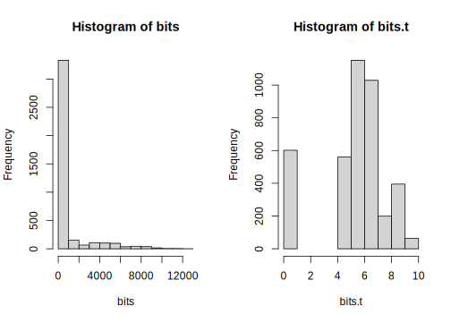
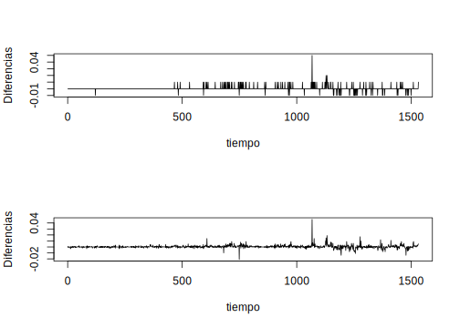

Capítulo 10 Modelos lineales estacionales y modelos no-estacionarios
10.1 Modelos Estacionales
Algunas series en finanzas tales como los ingresos trimestrales de los activos de una empresa presentan un cierto comportamiento cíclico o periódico. Tales tipos de series se denominan series de tiempo estacionales. En ciertas aplicaciones la estacionalidad la podemos considerar como algo secundario y por tanto la podemos remover, obteniendo una serie de tiempo estacionalmente ajustada la cula procedemos a estudiar. Sin embargo, en predicción de series financieras la estacionalidad es muy importante, tanto como otras características de los datos y por consiguiente la debemos considerar cuando hacemos el análisis de series de tiempo. En el capítulo Modelos ARMA, en la sección Modelos SARIMA ya vimos un modelo estacional, el modelo SARIMA. Ahora veremos algunos modelos econométricos útiles para modelar series estacionales.
Para una serie de tiempo estacional \(x_t\) con periodo estacinal \(s\), la diferenciación estacional se define como
\[\begin{equation} \Delta sx_t = x_t-x_{t-s}. \tag{10.1} \end{equation}\]
La diferencia convencional \(\Delta x_t=x_t-x_{t-1} = (1-B)x_t\) la llamaremos diferenciación usual. Consideremos ahora el caso especial de la siguiente serie estacional
\[\begin{equation} (1-B^s)(1-B)x_t = (1-\theta B)(1-\Theta B^s)w_t, \tag{10.2} \end{equation}\]
donde \(s\) es el período estacional de la serie, \(w_t\) es un ruido blanco, \(|\theta|<1\) y \(|\Theta|<1\). Este modelo se conoce como el modelo de aerolinea (ver Box et. al (1994), Cap. 9). La parte autorregresiva \(AR\) (lado izquierdo de (10.2)) del modelo consta de diferencias estacionales y usuales, mientras que el promedio móvil, \(MA\) (lado derecho de (10.2)) involucra dos parámetros, \(\theta\) y \(\Theta\). Consideremos la parte \(MA\),
\[w_t = (1-\theta B)(1-\Theta B^s)w_t = w_t-\theta w_{t-1}-\Theta w_{t-s}+\theta\Theta w_{t-s-1},\]
donde \(w_t=(1-B^s)(1-B)x_t\). El proceso \(w_t\) se denomina modelo estacional multiplicativo MA. En aplicaciones, un modelo estacional multiplicativo supone que la dinámica de las componentes regular y estacional de la serie son aproximadamente ortogonales.
10.2 Modelos de memoria larga
Algunas series de tiempo muestran marcadas correlaciones a rezagos grandes, nos referiremos a ellos como proceos de memoria larga. La memoria larga es una característica de muchas series de tiempo geofísicas. Los caudales en el río Nilo tienen correlación en rezagos grandes y Hurst (1951) demostró que esto afectaba la capacidad de diseño optima de una presa. Mudelsee (2007) demostró que la memoria larga es una propiedad hidrológica que puede conducir a sequías prolongadas o al agrupamiento temporal de inundaciones extremas. A una escala bastante diferente, Leland et. al (1993) encontraron que el tráfico de la red de área local (LAN) Ethernet parece ser estadísticamente autosimilar y un proceso de memoria larga. Demostraron que la naturaleza de la congestión producida por el tráfico autosimilar difiere drásticamente de la prevista por los modelos de tráfico utilizados en ese momento. Mandelbrot y sus compañeros de trabajo investigaron la relación entre la autosimilaridad y la memoria a largo plazo y desempeñaron un papel fundamental en el establecimiento de la geometría fractal como tema de estudio.
10.2.1 Diferenciación fraccionada
Beran (1994) describió las características cualitativas de una trayectoria de muesteo típica (realización) de un proceso de memoria larga. Hay períodos relativmanete largos durante el cual las observaciones tienden a mantenerse a un nivel alto y periodos largos similares durante el cual las observaicones tienden a ser de bajo nivel. Puede parecer que hay tendencias o ciclos sobre períodos de tiempos cortos, pero no persisten y toda la serie parece estacionaria. Un criteio más objetivo es que la correlación muestral \(r_k\) decaiga a cero a una tasa que es aproximadamente proporcional a \(k^{-\lambda}\) para algún \(0<\lambda<1\). Esto es notablemente más lento que la tasa de decaimiento de \(r_k\) para realizaciones a partir de un proceso \(AR(1)\), por ejemplo, el cual es aproximadamente proporcional a \(\lambda^k\) para algún \(0<\lambda<1\).
La definición matemática de un proceso estacionario con memoria larga, también conocido como dependencia o persistencia a largo plazo, se puede dar en términos de la función de autocorrelación.
Definición 10.1 Un proceso estacionario con memoria larga \(x_t\) tiene una función de autocorrelación \(\rho_k\) que satisface la condición
\[\begin{equation} \lim_{k\to\infty}\rho_k=ck^{-\lambda} \tag{10.3} \end{equation}\]
para algún \(c>0\) y \(0<\lambda<1\). Cuanto más cerca está \(\lambda\) de 0, más pronunciada es la memoria larga.
El hidrólogo Harold Hurst halló que para muchos registros geofísicos, incluyendo los datos del río Nilo, el estadístico conocido como rango reescalado sobre un período \(k\) es aproximadamente proporcional a \(k^H\) para algún \(H>1/2\). El parámetro de Hurst, \(H\), se define como \(H=1-\lambda/2\) y tiene rango \([1/2,1)\). Cuanto más cerca está \(H\) de 1, más persistente es la serie. Si no hay efecto de memoria larga, entonces \(H=1/2\).
Definición 10.2 Un modelo de diferencia fraccional de defiene como
\[\begin{equation} (1-B)^dx_t=w_t,\quad -1/2<d>1/2, \tag{10.4} \end{equation}\]
donde \(\{w_t\}\) es un proceso de ruido blanco.
Algunas de las propiedades para este modelo son las siguientes:
Si \(d<1/2\), entonces \(x_t\) es un proceso débilmente estacionario con representación \(MA\) infinita \[\begin{eqnarray*} x_t &=& w_t = \sum_{i=1}^{\infty}\psi_iw_{t-i}\text{; con }\psi_k=\frac{d(d+1)\cdots(k-1+d)}{k!} \\ &=& \frac{(k+d+1)!}{k!(d-1)!} \end{eqnarray*}\]
Si \(d>1/2\), entonces \(x_t\) es invertible con representación \(AR\) infinita \[\begin{eqnarray*} x_t &=& \sum_{i=1}^{\infty}\pi_ix_{t-i}+w_t\text{, con }\pi_k=\frac{-d(1-d)\cdots(k-1-d)}{k!} \\ &=& \frac{(k-d-1)!}{k!(-d-1)!} \end{eqnarray*}\]
Para \(-1/2<d<1/2\), la ACF de \(x_t\) es \[\rho_k=\frac{d(d+1)\cdots(k-1+d)}{(1-d)(2-d)\cdots(k-d)},\quad k=1,2,\ldots.\] En particular \(\rho_1=\frac{d}{1-d}\) y \[\rho_k\approx\frac{(-d)!}{(d-1)!}k^{2d-1}\text{, cuando }k\to \infty.\]
Para \(-1/2<d<1/2\), la PACF de \(x_t\) es \(\phi_{kk}=\frac{d}{k-d}\) para \(k=1,2,\ldots\).
Para \(-1/2<d<1/2\), la función de densidad epsectral \(f(\omega)\) de \(x_t\), que es la transformada de Fourier de la ACF de \(x_t\) satisface \[\begin{equation} f(\omega)\sim\omega^{-2d},\quad \omega\to0 \tag{10.5} \end{equation}\] donde \(\omega\in[0,2\pi]\) denota la frecuencia.
Definición 10.3 Un proceso de diferencia fraccional ARIMA, denotado \(FARIMA(p,d,q)\) tiene la forma
\[\begin{equation} \phi(B)(1-B)^dx_t = \psi(B)w_t \tag{10.6} \end{equation}\]
para algún \(-1/2<d<1/2\). El rango \(o<d<1/2\) da el proceso de memoria larga.
Es útil introducir la serie fraccionadamente diferenciada \(\{y_t\}\) y expresar la ecuación (10.6) como
\[\begin{equation} y_t = (1-B)^dx_t = [\phi(B)]^{-1}\psi(B)w_t, \tag{10.7} \end{equation}\]
porque esto sugiere un medio para adaptar un modelo \(FARIMA\) a las series de tiempo.
Para un valor de prueba \(d\), calculamos la serie fraccionadamente diferenciada \(\{y_t\}\), ajustamos un modelo \(ARIMA\) a \(\{y_t\}\) y luego investigamos los residuos. El cálculo de las series fraccionadamente diferenciadas \(\{y_t\}\) resulta de una expansión binomial formal de \((1-B)^d\) y está dada por
\[(1-B)^d = 1-dB+\frac{d(d-1)}{2!}B^2-\frac{d(d-1)(d-2)}{3!}B^3+\cdots\]
truncada para algún retardo convenientemente grande (\(L\)), que podríamos fijar razonablemente en 40. Por ejemplo, si \(d=0.45\), entonces
\[\begin{eqnarray*} y_t &=& x_t-0.45x_{t-1}+\frac{0.45(0.45-1)}{2!}x_{t-2}-\frac{0.45(0.45-1)(0.45-2)}{3!}x_{t-3}+\cdots\\ &=& x_t-0.450x_{t-1}-0.12375x_{t-2}-0.0639375x_{t-3}-\cdots-0.001287312x_{t-40}. \end{eqnarray*}\]
El código en \(R\) para calcular los coeficientes es
cf=rep(40)
d=0.45
cf[1]=-d
for (i in 1:39) cf[i+1]=-cf[i]*(d-i)/(i+1)Otra expresión equivalente para la ecuación (10.6), la cual resulta muy útil para simulación, es
\[\begin{equation} x_t = [\phi(B)]^{-1}\psi(B)(1-B)^{-d}w_t. \tag{10.8} \end{equation}\]
En simulación, el primer paso es calcular \((1-B)^{-d}w_t\). El operador \((1-B)^{-d}\) lo desarrollamos como
\[(1-B)^{-d} = 1-d(-B)+\frac{-d(-d-1)}{2!}B^2-\frac{-d(-d-1)(-d-2)}{3!}B^3+\cdots,\]
con la serie truncada en algún paso \(L\) convenientemente largo. Las distribuciones de la serie independiente de ruido blanco la podemos elegir de modo que se adapten a la aplicación. Cabe destacar que en finanzas y telecomunicaciones las distirbuciones de colas pesadas a menudo son apropiadas. En particular una distribución \(t\) con \(\nu (>4)\) grados de libertad tiene curtosis \(6/\nu-4\) y es también de cola pesada. Si, por ejemplo, \(d=0.45\) y \(L=40\), entonces
\[\begin{eqnarray*} (1-B)^{-d}w_t &=& w_t+0.45w_{t-1}+0.32625w_{t-2}+0.2664375w_{t-3}+\cdots\\ & & \cdots + 0.0657056w_{t-40}. \end{eqnarray*}\]
La función de autocorrelación \(\rho_k\) de un proceso \(FARIMA(0,d,0)\) tiende a
\[\frac{\Gamma(1-d)}{\Gamma(d)}|k|^{2d-1},\]
para \(n\) grande.
Un modelo \(FARIMA(0,d,0)\) con \(0<d<1/2\), está entre un modelo \(AR(1)\) y un camino aleatorio no estacionario. En la práctica, para ajustar o simular , debemos truncar el modelo \(FARIMA(0,d,0)\) en algún paso \(L\). Entonces, este es equivalente a un modelo \(AR(L)\), pero todos los coeficientes en el modelo \(FARIMA(0,d,0)\) dependen un solo parámetro \(d\).
10.2.2 Ajuste de datos simulados
En el siguiente script, la función ‘fraccdiff.sim’ genera una realizaci’pon de un proceso \(FARIMA\). El primer parámetro es la longitud de larealización, los parámetros \(AR\) y \(MA\) los podemos especificar usando la función ‘c()’ si hay más de uno para cada un de ellos, el siguiente parámetro es el valor de \(d\).
library(fracdiff)
set.seed(1)
fds.sim=fracdiff.sim(10000,ar=0.9,d=0.4)
x=fds.sim$series
fds.fit=fracdiff(x,nar = 1)En el siguiente script, el primer ‘for loop’ calcula los coeficientes para los términos de rezago en las diferencias fraccionales usando el valor ajustado para \(d\). El siguiente ciclo anidado calcula entonces la serie de tiempo fraccionadamente diferenciada. A continuación, se ajusta un modelo \(AR\) a la serie diferenciada y se grafica la ACF de los residuales. Los residuales deben parecer una realización de un ruido blanco discreto.
n <- length(x)
L <- 30
d <- fds.fit$d
fdc <- d
fdc[1] <- fdc
# Calculo de los coeficientes
for (k in 2:L) fdc[k] <- fdc[k-1] * (d+1-k) / k
y <- rep(0, L)
# Calculo de la serie fraccionadamente diferenciada
for (i in (L+1):n) {
csm <- x[i]
for (j in 1:L) csm <- csm + ((-1)^j) * fdc[j] * x[i-j]
y[i] <- csm
}
y <- y[(L+1):n]
z.ar <- ar(y)
ns <- 1 + z.ar$order
z <- z.ar$res [ns:length(y)]
# Graficos
par(mfcol = c(2, 2))
plot(as.ts(x), ylab = "x", xlab="Tiempo", col="blue")
acf(x) ; acf(y) ; acf(z)La figura muestra una realización \(\{x_t\}\) del proceso fraccionadamente diferenciado \(FARIMA(1,0.4,0)\) (parte superior izquierda) con parámetro \(AR\), \(\phi=0.9\). Los valores estimados para \(d\) y \(\phi\) son 0.429 y 0.8839 respectivamente. En la parte superio derecha observamos la ACF para la realización \(\{x_t\}\), y en la parte inferior izquierda la PACF para la serie fraccionadamente diferenciada \(\{y_t\}\), como podemos notar, ambas funciones decaen lentamente, lo que indica la memoria larga. En la parte inferior derecha de la misma figura se mmuestra la ACF para los residuales de \(y_t\). Con la función ‘summary()’ podemos ver los valores de los parámetros del modelo, así como algunos estadísticos.
# Resumen
summary(fds.fit)##
## Call:
## fracdiff(x = x, nar = 1)
##
## Coefficients:
## Estimate Std. Error z value Pr(>|z|)
## d 0.42904 0.01439 29.8 <2e-16 ***
## ar 0.88368 0.00877 100.7 <2e-16 ***
## ---
## Signif. codes:
## 0 '***' 0.001 '**' 0.01 '*' 0.05 '.' 0.1 ' ' 1
## sigma[eps] = 1.012
## [d.tol = 0.0001221, M = 100, h = 0.0001508]
## Log likelihood: -1.43e+04 ==> AIC = 28630 [3 deg.freedom]10.2.3 Evaluación de las pruebas de dependencia a largo plazo
A continuación mostraremos tre ejemplos donde evaluaremos las dependencias a largo plazo. El primer ejemplo es con los datos en el archivo “Nilemin.txt”, el cual contiene los nivéles mínimos de agua (\(mm\)) del río Nilo para los años 622 a 1284, medidos en la Isla de Roda cerca del Cairo. El segundo ejemplo son los números de llegadas de paquetes (bits) en 4000 intervalos consecutivos de \(10ms\) vistos en una Ethernet en las instalaciones de Bellcore Morristown Research and Engineering, el archivo es “LAN.txt”. El último ejemplo son los datos del porcentaje mensual de la tasa preferencial del Banco de la Reserva Federal de los Estados Unidos, cortesía de la Junta de Gobernadores del Sistema de la Reserva Federal, desde enero de 1949 hasta noviembre de 2007. El archivo es “mprime.txt”. Todos los archivos de datos fueron obtenidos de: https://github.com/AtefOuni/ts/tree/master/Data.
Ejemplo 10.1 (Nivéles mínimo del río Nilo) Para estos datos, es probable que haya una tendencia creciente durante el período de 600 años debido a los cambios climáticos o a los cambios en los canales alrededor de la Isla de Roda. Iniciamos el análisis estimando y removiendo la tendencia usando regresión lineal. Luego elegimos el valor de ‘nar’ inicial para aplicar la función ‘fracdiff’ sobre los residuales de la regresión. El valor estimado de \(d\) con \(nar=5\) es 0.3456 con un error estándar de 0.0295. El mejor modelo para la serie fraccionadamente diferenciada es un \(AR(1)\) con parámetro \(\phi=0.076\) y \(d=0.3420\).
Nilo=read.table("data/Nilemin.txt", header = T)
# Variables
Nivel=Nilo$Depth
n=length(Nivel)
tiempo=seq(1:n)
# Regresion linela para removver la tendencia
y=lm(Nivel~tiempo, Nilo)
summary(y)##
## Call:
## lm(formula = Nivel ~ tiempo, data = Nilo)
##
## Residuals:
## Min 1Q Median 3Q Max
## -245.4 -57.0 -7.0 49.3 335.1
##
## Coefficients:
## Estimate Std. Error t value Pr(>|t|)
## (Intercept) 1.11e+03 6.67e+00 166.13 < 2e-16 ***
## tiempo 1.20e-01 1.74e-02 6.88 1.4e-11 ***
## ---
## Signif. codes:
## 0 '***' 0.001 '**' 0.01 '*' 0.05 '.' 0.1 ' ' 1
##
## Residual standard error: 85.8 on 661 degrees of freedom
## Multiple R-squared: 0.0668, Adjusted R-squared: 0.0653
## F-statistic: 47.3 on 1 and 661 DF, p-value: 1.42e-11reg=y$coefficients[1]+y$coefficients[2]*tiempo
Nilo.det=Nivel-reg
# Ajuste de la serie fraccionada diferenciada
Nilo.frac=fracdiff(Nilo.det, nar = 1)
summary(Nilo.frac)##
## Call:
## fracdiff(x = Nilo.det, nar = 1)
##
## Coefficients:
## Estimate Std. Error z value Pr(>|z|)
## d 0.3420 0.0291 11.76 <2e-16 ***
## ar 0.0764 0.0491 1.56 0.12
## ---
## Signif. codes:
## 0 '***' 0.001 '**' 0.01 '*' 0.05 '.' 0.1 ' ' 1
## sigma[eps] = 69.92
## [d.tol = 0.0001221, M = 100, h = 3.96e-05]
## Log likelihood: -3.76e+03 ==> AIC = 7520 [3 deg.freedom]# Simulacion de la serie fraccionada diferenciada
Nilo.sim=fracdiff.sim(n,ar=Nilo.frac$ar,d=Nilo.frac$d)
Nilo.sim.ts=Nilo.sim$series
# Modelo AR(1) para conseguir los residuales
Nilo.ar=ar(Nilo.sim.ts,order.max = 1)
Nilo.resid=Nilo.ar$resid[2:n]En la gráfica siguiente se muestran los nivéles del río Nilo junto con la recta de regresión de tendencia (superior izquierda); la ACF de la serie de tiempo una vez removida la tendencia (superior derecha); la serie simulada con el proceso \(FARIMA(1,d,0)\), con \(d=0.342\) (medio izquierda); la ACF para la serie fraccionadamente diferenciada (medio izquierda); la ACF de los residuales del modelo \(AR(1)\) (inferior izquierda) y la ACF de los residuales al cuadrado (inferior derecha).
par(mfrow=c(3,2))
plot(tiempo,Nivel, type="l", col="blue", main="Nivel del río Nilo")
lines(tiempo,y$coefficients[1]+y$coefficients[2]*tiempo,col="red")
acf(Nilo.det, main="ACF de la serie con la tendencia removida")
plot(tiempo,Nilo.sim.ts, type="l", col="blue", ylab="Simulación", main="Serie fraccionada diferenciada")
acf(Nilo.sim.ts, main="ACF de la serie fraccionada diferenciada")
acf(Nilo.resid, main="ACF de los residuales")
acf(Nilo.resid^2, main="ACF de los residuales cuadrados")
Figura 10.1: Nivéles del río Nilo (serie de tiempo) y tendencia (superior izquierda); ACF de la serie de tiempo sin tendencia (superior derecha); serie simulada con un proceso \(FARIMA(1,0.342,0)\) (medio izquierda); ACF para la serie fraccionadamente diferenciada (medio izquierda); ACF de los residuales del modelo \(AR(1)\) (inferior izquierda) y la ACF de los residuales al cuadrado (inferior derecha)
Ejemplo 10.2 (Datos de Ethernet en Bellcore) al trazar el historgramas de frecuencias de estos datos, nos damos cuenta que está notablemente sesgado, por lo que trabajamos con el logaritmo de uno más el número de bits. La ACF del log(bits) sugiere un modelo \(FARIMA\) con un ‘nar’ mayor a 40. Usando \(nar=48\), estimamos el modelo, el valor estimado para \(d=0.3404\) y la serie fraccionadamente diferenciada no tiene correlación sustancial. Sin embargo, la función ‘ar’ fija un modelo \(AR(26)\) a la serie, con un error estándar estimado de 2.10 el cual es ligeramente menor que 2.13 dado para el modelo \(FARIMA\). Existe una autocrrelación notable en la serie de residuos cuadrados del modelo \(AR(26)\), que es una característica de las series de tiempo con estallidos de actividad y que podemos modelar como un proceso \(GARCH\).
LAN=read.table("data/LAN.txt", header = T)
bits=LAN$bits
# Transformacion log(bits+1)
bits.t=log(bits+1)
# Histogramas
par(mfrow=c(1,2))
hist(bits)
hist(bits.t)
# Ajuste de un modelo FARIMA con d=48
bits.frac=fracdiff(bits.t,nar=48)
summary(bits.frac)##
## Call:
## fracdiff(x = bits.t, nar = 48)
##
## Coefficients:
## Estimate Std. Error z value Pr(>|z|)
## d 0.340481 0.023313 14.60 < 2e-16 ***
## ar1 -0.014851 0.027578 -0.54 0.59023
## ar2 -0.096160 0.019795 -4.86 1.2e-06 ***
## ar3 -0.049305 0.017644 -2.79 0.00520 **
## ar4 0.016784 0.017196 0.98 0.32905
## ar5 -0.010652 0.016283 -0.65 0.51298
## ar6 -0.023007 0.016158 -1.42 0.15449
## ar7 0.011378 0.016358 0.70 0.48673
## ar8 0.056854 0.016261 3.50 0.00047 ***
## ar9 0.040561 0.016408 2.47 0.01344 *
## ar10 0.048990 0.016267 3.01 0.00260 **
## ar11 0.056088 0.016165 3.47 0.00052 ***
## ar12 0.014485 0.016180 0.90 0.37063
## ar13 0.049191 0.016206 3.04 0.00240 **
## ar14 0.046020 0.016066 2.86 0.00418 **
## ar15 0.039909 0.016050 2.49 0.01290 *
## ar16 -0.003971 0.016152 -0.25 0.80582
## ar17 -0.033314 0.016088 -2.07 0.03839 *
## ar18 0.000339 0.016048 0.02 0.98317
## ar19 0.000302 0.016076 0.02 0.98500
## ar20 0.002580 0.016081 0.16 0.87252
## ar21 -0.010736 0.016191 -0.66 0.50726
## ar22 -0.000402 0.015954 -0.03 0.97990
## ar23 -0.061302 0.015982 -3.84 0.00013 ***
## ar24 0.018400 0.016115 1.14 0.25354
## ar25 -0.024523 0.016001 -1.53 0.12538
## ar26 0.032997 0.016021 2.06 0.03944 *
## ar27 -0.006242 0.016016 -0.39 0.69672
## ar28 0.016139 0.016048 1.01 0.31458
## ar29 -0.017378 0.016113 -1.08 0.28081
## ar30 0.021073 0.016053 1.31 0.18929
## ar31 -0.026200 0.016050 -1.63 0.10260
## ar32 -0.001268 0.015932 -0.08 0.93655
## ar33 -0.016156 0.016369 -0.99 0.32363
## ar34 -0.007927 0.016067 -0.49 0.62175
## ar35 -0.043696 0.015949 -2.74 0.00615 **
## ar36 -0.016645 0.016103 -1.03 0.30130
## ar37 -0.008787 0.016008 -0.55 0.58308
## ar38 -0.017836 0.016063 -1.11 0.26685
## ar39 -0.020635 0.016039 -1.29 0.19826
## ar40 -0.015276 0.016044 -0.95 0.34102
## ar41 -0.022284 0.016026 -1.39 0.16438
## ar42 0.035214 0.016053 2.19 0.02826 *
## ar43 -0.018629 0.016031 -1.16 0.24520
## ar44 -0.010474 0.016073 -0.65 0.51463
## ar45 0.005752 0.016119 0.36 0.72119
## ar46 -0.048927 0.016067 -3.05 0.00233 **
## ar47 -0.006103 0.016059 -0.38 0.70393
## ar48 -0.014164 0.016066 -0.88 0.37801
## ---
## Signif. codes:
## 0 '***' 0.001 '**' 0.01 '*' 0.05 '.' 0.1 ' ' 1
## sigma[eps] = 2.073
## [d.tol = 0.0001221, M = 100, h = 9.055e-05]
## Log likelihood: -8.59e+03 ==> AIC = 17285 [50 deg.freedom]# simulacion del proceso FARIMA
bits.sim=fracdiff.sim(length(bits),ar=bits.frac$ar, d=bits.frac$d)
bits.ts=bits.sim$series
# Modelo AR(26) para conseguir los residuales
bits.ar=ar(bits.ts,order.max = 26)
bits.resid=bits.ar$resid
# Graficos
par(mfrow=c(3,2))
plot(bits.t, type="l", main = "Serie de tiempo transformada, log(bits+1)", xlab = "Tiempo", ylab = "x")
acf(bits.t, lag.max = 50, main="ACF de la serie log(bits+1)")
plot(bits.ts, type = "l", main = "Serie fraccionada diferenciada de log(bits+1)")
acf(bits.ts, main="ACF de la serie fraccionada diferenciada de log(bits+1)")
acf(bits.resid[27:4000], main="ACF de los residuales ")
acf(bits.resid[27:4000]^2, main="ACF de los residuales cuadrado")
Ejemplo 10.3 (Tasa de prestamo bancario) La serie de tiempo es graficada en la parte superior de la figura ?? y parece que podría ser la realización de un paseo al azar. También tiene un período de alta variabilidad. El correlograma muestras correlaciones muy altas con pasos pequeños y correlaciones sustanciales de hasta paso 28. Ni un paseo al azar ni un modelo con tendencia son modelos adecuados para simulación a largo plazo de las tasa de interés en una economía estable. En lugar de ello ajustamos un modelo \(FARIMA\) que tiene la ventaja de ser estacionario.
La estimación de \(d\) es casi 0, lo que implica que el decaimiento de las correlaciones a partir de un valor inicial alto es más rápido que en el caso de un modelo \(FARIMA\). El modelo \(AR\) ajustado tiene un orden de 17 y no es del todo satisfactorio debido a la correlación estadísticamente significativa en el paso 1 de la serie de residuales. Las autocorrelaciones sustanciales de los residuales cuadrados del modelo \(AR(17)\) sugieren que un modelo que se ajusta mejor es un modelo \(GARCH\).
TPB=read.table("data/mprime.txt",header = T)
tasa=TPB$Interest
# Graficos
par(mfrow=c(2,1))
plot(tasa, type = "l", xlab = "Tiempo", ylab="Tasa (%)", main="Serie de tiempo de las tasa de prestamos bancario")
acf(tasa,lag.max = 40, main="ACF tasa de prestamo bancario")
# Ajuste de un modelo FARIMA con d=30
tasa.frac=fracdiff(tasa,nar=30)## Warning: unable to compute correlation matrix; maybe
## change 'h'summary(tasa.frac)##
## Call:
## fracdiff(x = tasa, nar = 30)
##
## *** Warning during (fdcov) fit: unable to compute correlation matrix; maybe change 'h'
##
## Coefficients:
## Estimate
## d 0.00
## ar1 1.67
## ar2 -0.92
## ar3 0.25
## ar4 -0.18
## ar5 0.46
## ar6 -0.63
## ar7 0.48
## ar8 -0.02
## ar9 -0.03
## ar10 -0.21
## ar11 0.20
## ar12 -0.17
## ar13 0.19
## ar14 0.03
## ar15 -0.24
## ar16 0.24
## ar17 -0.17
## ar18 0.03
## ar19 -0.01
## ar20 0.05
## ar21 -0.03
## ar22 -0.06
## ar23 0.06
## ar24 -0.01
## ar25 0.02
## ar26 0.03
## ar27 0.00
## ar28 -0.06
## ar29 0.05
## ar30 -0.02
## sigma[eps] = 0.3152
## [d.tol = 0.0001221, M = 100, h = 1.981e-06]
## Log likelihood: -187 ==> AIC = 438 [32 deg.freedom]# simulacion del proceso FARIMA
tasa.sim=fracdiff.sim(length(tasa),ar=tasa.frac$ar, d=tasa.frac$d)
tasa.ts=tasa.sim$series
# Modelo AR(17) para conseguir los residuales
tasa.ar=ar(tasa.ts,order.max = 17)
tasa.resid=tasa.ar$residpar(mfrow=c(3,2))
plot(tasa, type = "l", xlab="Tiempo", ylab="Tasa (%)",
main="Serie de tiempo de las tasa de prestamos bancario")
acf(tasa,lag.max = 40, main="ACF tasa de prestamo bancario")
plot(tasa.ts, type = "l", xlab="Tiempo", main = "Serie fraccionada diferenciada")
acf(tasa.ts, main="ACF de la serie fraccionada diferenciada")
acf(tasa.resid[18:707], main="ACF de los residuales ")
acf(tasa.resid[18:707]^2, main="ACF de los residuales cuadrado")Figura 10.2: Serie de tiempo de tasa de prestamos bancario (superior izquierda); ACF de la tasa de prestamo bancario (superior derecha); Serie con un proceso FARIMA(30,0.00012,0) (medio izquierda); ACF de la serie fraccionada diferenciada (medio derecha); ACF de los residuales (inferior izquierda); ACF de los residuales cuadrados (inferior derecha).
En el capítulo Modelos ARCH y GARCH retomaremos estos 3 ejemplos y realizaremos los ajustes y simulación con modelos \(GARCH\), de manera de observar las diferencias y lo apropiado de dichos modelos a estos datos.
10.2.4 Simulación
Los modelos FARIMA son importantes para la simulación porque los modelos de memoria corta, que ignoran la evidencia de memoria larga, pueden llevar a una sobreestimación seria del rendimiento del sistema. Esto se ha demostrado de forma convincente en las escalas de los enrutadores de las redes de telecomunicaciones.
Los modelos realistas para la simulación normalmente necesitarán incorporar modelos GARCH y distribuciones de cola pesada para la serie de ruido blanco. El procedimiento es ajustar un modelo GARCH a los residuos del modelo AR ajustado a las series fraccionadamente diferenciadas. Entonces podemos ajustar los residuos del modelo GARCH y una distribución de probabilidad adecuada a los mismos. Una vez fijados los modelos, procedemos de la siguiente manera: generamos números aleatorios a partir del modelo GARCH de probabilidad ajustado de lo residuos y realizamos la simulación.
10.3 Modelos no estacionarios
Los modelos que hasta ahora hemos considerado están basados en la suposición de que son procesos estacionarios. Esta suposición implica que la media, la varianza y la función de autocovaraizna del proceso son invariantes bajo traslaciones respecto al tiempo, es decir, la media y la varianza son constantes y la función de autocovarianza solo depende de los retardos. En esta sección trabajaremos con modelos no estacionarios, dado que muchas series de tiempo económicas y financieras son no-estacionarias, y en particular suelen presentar variaciones en sus niveles a lo largo del tiempo y en algunos casos en la varianza.
Vamos a ver dos casos:
No estacionaridad en la varianza
No estacionaridad en la media
También decribiremos brevemente el test de raíz unitaria.
10.3.1 No estacionarios en Varianza
Cuando observamos una serie a lo largo del tiempo, con frecuencia ocurre que la varianza suele presentar una tendencia. Para ver esto, asumiremos primeramente que podemos descomponer una serie de tiempo en dos componentes; una componente no estocástica, su media, y una componente aleatoria, de modo que si \(x_t\) es nuestra serie de tiempo, entonces
\[\begin{equation} x_t = \mu_t+\varepsilon_t \tag{10.9} \end{equation}\]
y supondremos además que la varianza de los errores, \(\varepsilon_t\) está relacionada de manera funcional con la media \(\mu_t\) por medio de \(Var(x_t)=Var(\varepsilon_t)=\mu_th^2\sigma^2\), donde \(h\) es una función conocida. Nuestro objetivo ahora es hallar una transformación, digamos \(g(x_t)\), que estabilice la varianza, es decir, queremos que la varianza de \(y_t=g(x_t)\) sea constante. Una transformación general y práctica para selecccionar \(g(x_t)\) fue definida por Box y Cox (1964), la misma se define como
\[\begin{equation} g(x_t) = \begin{cases} \frac{x_t^{\lambda}-1}{\lambda},& \lambda\neq0\\ \ln(x_t),& \lambda=0 \end{cases} \tag{10.10} \end{equation}\]
Meidante la regla de L’Hopital podemos demostrar que
\[\lim_{\lambda\to0}\frac{x_t^{\lambda}-1}{\lambda}=\log(x_t).\] Así mismo, para contemplar el caso de \(x_t\) negativos, se define
\[\begin{equation} g(x_t) = \begin{cases} \frac{(x_t+\lambda_2)^{\lambda_1}-1}{\lambda_1},& \lambda_1\neq0\\ \ln(x_t+\lambda_2),& \lambda_1=0 \end{cases} \tag{10.11} \end{equation}\]
Donde \(\lambda_2\) se elige de tal forma que \(x_t+\lambda_2>0\) para todo \(t\). De manera que sólo veremos a \(\lambda_1\) como parámetro de estas transformaciones. Esta familia en continua en \(\lambda\) y monótona creciente para cada \(\lambda\), es decir que el orden original entre las \(x_t\) se preserva; si \(x_1>x_2\), entonces \(g(x_1)>g(x_2)\).
10.3.2 No estacionarios en Media
Consideremos nuevamente la ecuacion (10.9) y supongamos ahora que \(\mu_t\) no es constante. Este tipo de series ha sidio ampliamente estudiado con una amplia variedad de formas para modelar series de tiempo con estas características. Supongamos que la media es un término de tendencia, el cual está expresado como un polinomio de orden \(d\), en el tiempo y que el término de error \(\varepsilon_t\) es un proceso estocástico, estacinario de media cero. Esto es siempre posible si tomamos en cuenta el teorema de descomposición de Wold para proceso no-estacionarios. De esta manera, se tiene que el proceso lo podemos escribir como
\[\begin{equation} x_t = \mu_t+\varepsilon_t = \sum_{j=1}^d\beta_jt^j+\psi(B)\varepsilon_t \tag{10.12} \end{equation}\]
Dado que \(\mathbb{E}(\varepsilon_t) = \psi(B)\mathbb{E}(\varepsilon_t)=0\), entonces \(\mathbb{E}(x_t)=\mathbb{E}(\mu_t)=\sum_{j=1}^d\beta_jt^j\), y dado que los coeficientes \(\beta_j\) permanecen constantes en el tiempo, dicha tendencia la consideramos un término determinista. Así pues, este tipo de tendencia las podemos remover aplicando una transformación simple. Por ejemplo, consideremos \(d=1\), en la ecuación (10.9), entonces tenemos una tendencia lineal, supongamos por simplicidad que \(\varepsilon_t\) es un ruido blanco, entonces
\[\begin{equation} x_t = \beta_0+\beta_1t+\varepsilon_t \tag{10.13} \end{equation}\]
Si consideramos una diferenciación de orden 1 de \(x_t\), entonces
\[\begin{eqnarray*} y_t = x_t-x_{t-1} &=& (1-B)x_t = \nabla x_t\\ &=& \beta_1+\nabla\varepsilon_t \end{eqnarray*}\]
donde \(\nabla=(1-B)\) es el operador de diferencias de primer orden definido en (2.41). De esta forma, el nuevo proceso \(y_t\) es ujn proceso \(MA(1)\) estacionario, dado que \(\mathbb{E}(y_t)=\beta_1\), sin embargo no es invertible.
En general, si la tendencia es determinada por un polinomio de orden \(d\), y \(\varepsilon_t\) está caracterizado por un proceso \(ARMA\)
\[\phi(B)x_t = \theta(B)\varepsilon_t,\]
entonces consideramos las diferencias de orden \(d\), \(\nabla^dx_t\), obteniendo el nuevo proceso
\[y_t = \nabla^dx_t = \theta_0+\frac{\nabla^d\theta(B)}{\phi(B)}\varepsilon_t,\]
donde \(\theta_0=d!\beta_d\). Así, la parte \(MA\) del proceso generado por \(\nabla^dx_t\) tendrá \(d\) raíces unitarias.
10.3.3 Test de raíz unitaria
En esta sección demostraremos la presencia de una o más raíces unitarias en el polinomio autorregresivo de orden \(p\), \(\phi(B)\) en el modelo
\[\phi(B)x_t = \theta_0+\theta(B)\varepsilon_t,\] donde \(x_0\) se asume fijo y \(\theta_0=\phi(1)\mu\) con \(\mu\) la media de \(x_t\). Usaremos el test de Dickey-Fuller (ADF). Este test contrasta la hipótesis nula de existencia de una raíz unitaria contra la alternativa de que no existen raíces unitarias. Las hipóstesis son:
\[\begin{eqnarray*} H_0 &:& \beta=1\\ H_a &:& \beta<1 \end{eqnarray*}\]
El estadístico de prueba es:
\[T_{DF} = ADF-test = \frac{\hat{\beta}-1}{\sqrt{Var(\hat{\beta})}}\] El cual se aplica sobre la regresión
\[\begin{equation} x_t = c_t+\beta x_{t-1}+\sum_{i=1}^{p-1}\phi_i\delta x_{t-i}+e_t \tag{10.14} \end{equation}\]
donde \(c_t\) es una función determinista del tiempo \(t\) y \(\delta x_j=x_j-x_{j-1}\) es la serie diferenciada de \(x_t\), el valor \(p\) lo fijamos de modo que el error \(e_t\) sea correlacionado serialmente. El término de error también se supone homocedástico. En la práctica, \(c_t\) puede ser cero, una constane \(\neq0\), o incluso \(c_t=w_0+w_1t\), \(\hat{\beta}\) es la estimación por mínimos cuadrados de \(\beta\).
La determinación o especificación del retardo \(p\), es un punto importante a la hora de aplicar el test de Dickey-Fuller. Si seleccionamos un \(p\) muy pequeño, enotnces la correlación restante producirá un sesgo en el test. Por otra parte, si escogemos un \(p\) muy grande, entonces se verá afectada la potencia del test. Ng y Perron (1995) propusieron el siguiente procedimiento para la selección de \(p\); para garantizar la estabilidad en el tamaño del test y pérdida mínima en la potencia.
Establecer una cota superior para \(p\) denotada por \(p_{max}\).
Estimar la regresión ADF con \(p=p_{max}\).
Si el valor absoluto del estadístico \(T_{DF}\) para el test de la última diferencia tomada es mayor que 1.6, fijamos \(p=p_{max}\) y aplicamos el test de raíz unitaria.
Si no es así, hacemos \(p=p_{max}-1\) y repetimos los pasos 2 y 3.
Una regla útil para determinar \(p_{max}\) es
\[p_{max} = \left[12\left(\frac{T}{100}\right)^{1/4}\right]\]
donde \([\cdot]\) denota la parte entera y \(T\) es el tamaño de la muestra. Esta selección de \(p_{max}\) permite que este aumente cuando el tamaño de la muestra aumenta.
10.4 Modelos de regresión
Las técnicas de regresión de series de tiempo se aplican con mucha frecuencia en el análisis de datos financieros, en la estimación y en la validación de modelos de precios de activos y rentabilidades. En finanzas, la capacidad de predicción de los rendimientos de los activos haciendo uso de tasas de valoración como dividendo/precio, ganancias/precio entre otras, generalmente se establecen mediante las técnicas de regresión de series de tiempo, y donde el modelo de regresión resultante es usado para la predicción de las rentabilidades futuras. Los modelos de regresión de series de tiempo tambi´en se utilizan para probar la eficiencia informativa de los mercados financieros. Sin embargo, es importante ser cuidadosos a la hora de aplicar este tipo de modelos, puesto que las propiedades de las series de tiempo de los datos puede influir en las propiedades de los valores estimados en la regresión y en la inferencia. En términos generales, estos modelos son apropiados para el análisis de series estacionarias. Para el caso de las series con tendencia no-estacionarias puede ser o no apropiadas, dependiendo entonces de la naturaleza del componente de tendencia.
Consideremos el modelo de regresión de series de tiempo
\[\begin{equation} y_t=\beta_0+\beta_1x_{1t}+\cdots+\beta_kx_{kt}+\varepsilon_t = x_t^t\vec{\beta}+\varepsilon_t, t=1,\ldots,T \tag{10.15} \end{equation}\]
donde \(x_t=(1,x_{1t},\ldots,x_{kt})^t\) es un vector de variables explicativas de dimensión \((k+1)\times1\), \(\vec{\beta}=(\beta_0,\beta_1,\ldots,\beta_k)^t\) un vector de coeficientes de dimensión \((k+1)\times1\) y \(\varepsilon_t\) es un término de error aleatorio.
El modelo (10.15) satisface las siguietnes suposiciones:
El modelo está especificado correctamente.
\(\{y_t,x_t\}\) es estacionario y ergódico conjuntamente.
Las variables regresoras \(x_t\) son tales que \(\mathbb{E}(x_{is}\varepsilon_t)=0\) para todo \(s\leq t, i = 1,\ldots,k\).
\(\mathbb{E}(x_tx_t^t)=\Sigma_{xx}\) es de rango \(k+1\).
\(\{x_t\varepsilon\}\) es un proceso no correlacionado con matriz de covarianza \((k+1)\times(k+1)\) finita \(\mathbb{E}(\varepsilon_t^2x_tx_t^t)=S=\sigma^2\Sigma_{xx}\).
Observaciones:
La segunda suposición descarta los regresores con tendencia.
La trcera suposición descarta los regresores endógenos pero permite variables y retardos dependientes.
La suposición (4) evita regresores redundantes o multicolinealidad exacta.
La quinta suposición implica que el término de error es un proceso no correlacionado serialmente con varianza incondicional \(\sigma^2\) constante.
Los regresores \(x_t\) son aleatorios y el error \(\varepsilon_t\) no se asume gaussiano.
La estimación del modelo se obtiene por minimos cuadrados ordinarios y está basada en la suma de los residuso al cuadrado
\[SSR(\vec{\beta}) = \sum_{t=1}^T(y_t-x_t^t\vec{\beta})^2 = \sum_{t=1}^T\varepsilon_t^2,\]
obteniéndose así
\[y_t=x_t^t\hat{\mathbf{\beta}}+\hat{\varepsilon}_t,\hspace{0.5cm} t=1,\ldots,T,\] donde
\[\hat{\mathbf{\beta}}=(X^tX)^{-1}X^ty = \left[\sum_{t=1}^Tx_tx_t^t\right]^{-1}\sum_{t=1}^Tx_ty_t\] y \(\hat{\varepsilon}_t=y_t-\hat{y}_t=y_t-x_t^t\hat{\mathbf{\beta}}\). La varianza del error la estimamos por \(\sigma^2=\hat{\varepsilon}^t\hat{\varepsilon}/(T-k-1)\).
La relación entre dos series de tiempo resulta de gran interés en muchas aplicaciones. Veamos un ejemplo de dos series de tipos de interés con diferentes plazos de vencimiento y como ajustar una regresión lineal para ambas series.
Ejemplo 10.4 (Mercado Interbancario Europeo (EURIBOR)) Analicemos el modelo que considera la relación entre dos series de tipos de interés, con frecuencia diaria, del Mercado Intercambiario Europeo (EURIBOR):
- \(r_{3t}\): serie de tipo de interés con plazo de vencimiento a 3 meses
- \(r_{6t}\): serie de tipo de interés con plazo de vencimiento a 6 meses
Ambas series tienen 1532 observaciones. Las muestras fueron tomadas del 07/11/2012 al 06/11/2018. Los archivos de datos son “EURIBOR-3m.xlsx” y “EURIBOR-6m.xlsx”. La primera columna es la fecha, la segunda el precio y la tercera columna la diferencia en porcentaje con relación al día anterior.
Para estas series podemos considerar el siguiente modelo de regresión
\[r_{6t}=\beta_0+\beta_1r_{3t}+\varepsilon,\]
donde \(r_{6t}\) y \(r_{3t}\) son las series ya descritas y \(\varepsilon_t\) el término de error.
La gráfica ?? muestra las dos series de tipo de interés, en azul con vencimiento a 3 meses yen rojo con vencimiento a 6 meses.
# Series EURIBOR a 3 y 6 meses de plazo
r3t=read.table("data/EURIBOR-3m.txt", header = F)
r6t=read.table("data/EURIBOR-6m.txt", header = F)
# Grafico
plot(r3t$V2, type = "l", col="blue", ylab = "Precio", xlab = "tiempo", ylim=c(-0.35,0.5))
lines(r6t$V2, col="red")El modelo resultante del ajuste es el siguiente
\[r_{6t}=0.0919+1.0608r_{3t}+\varepsilon_t,\hspace{0.5cm}\hat{\sigma}_{\varepsilon}=0.0204,\]
con \(R^2=0.9937\). En la tabla siguiente mostramos un resumen del modelo
| Estimado | Error. std | t-valor | \(P(>|t|)\) | |
|---|---|---|---|---|
| \(\beta_0\) | 0.0919 | 0.00054 | 168.8 | \(<2e^{-16}\) |
| \(\beta_1\) | 1.0608 | 0.00215 | 491.8 | \(<2e^{-16}\) |
El modelo confirma la correlación alta que existe entre las dos series, sin embargo, observando los residuales del modelo notamos que el modelo ajustado es inadecuado para estas dos series. Las instrucciones en R para el ajuste de regresión son las siguientes:
# Regresion
yt=lm(r6t$V2~r3t$V2, data = r3t[,2:3])
summary(yt)##
## Call:
## lm(formula = r6t$V2 ~ r3t$V2, data = r3t[, 2:3])
##
## Residuals:
## Min 1Q Median 3Q Max
## -0.03335 -0.01588 -0.00631 0.01512 0.07648
##
## Coefficients:
## Estimate Std. Error t value Pr(>|t|)
## (Intercept) 0.091959 0.000545 169 <2e-16 ***
## r3t$V2 1.060851 0.002157 492 <2e-16 ***
## ---
## Signif. codes:
## 0 '***' 0.001 '**' 0.01 '*' 0.05 '.' 0.1 ' ' 1
##
## Residual standard error: 0.0204 on 1530 degrees of freedom
## Multiple R-squared: 0.994, Adjusted R-squared: 0.994
## F-statistic: 2.42e+05 on 1 and 1530 DF, p-value: <2e-16# Residuales
m<-matrix(c(1,2,3,3),2,2,byrow=TRUE)
layout(m)
plot(yt$residuals, type = "l", ylab = "Residuales", xlab = "tiempo")
qqnorm(yt$residuals);qqline(yt$residuals, col=2)
acf(yt$residuals, main="ACF de los residuales")En la parte inferior de la figura ?? podemos observar la ACF de los residuales, la cual es significativa con un decaimiento bastante lento, mostrando un patrón similar a una serie con raíces unitarias.
El comportamiento de los residuos sugiere que existen diferencias bien marcadas entre ambas series. Tomando en cuenta el comportamiento no-estacionario de ambas series de tipos de interés y de los residuos obtenidos del modelo de regresión previo, vemos necesario considerar la diferenciación para las series de EURIBOR, teniendo dos nuevas series.
\[\begin{eqnarray*} d_{3t} &=& r_{3t}-r_{3,t-1} = (1-B)r_{3t}\text{, con }t\geq2\\ d_{6t} &=& r_{6t}-r_{6,t-1} = (1-B)r_{6t}\text{, con }t\geq2 \end{eqnarray*}\]
y el modelo de regresión será
\[d_{6t}=\beta_0'+\beta_1'd_{3t}+\varepsilon_t'\]
En la figura ?? se muestran las series diferenciadas. Al realizar el ajuste del modelo obtenemos lo siguiente:
\[d_{6t} = 0.00024+0.4877d_{3t}+\varepsilon_t',\hspace{0.5cm}\hat{\sigma}_{\varepsilon}'=0.0021,\]
con \(R^2=0.3577\).
# Diferencias
d3t=diff(r3t$V2)
d6t=diff(r6t$V2)
# Grafico diff
par(mfrow=c(2,1))
plot(d3t, type = "l", ylab = "Diferencias", xlab = "tiempo")
plot(d6t, type = "l", ylab = "Diferencias", xlab = "tiempo")
# Regresion diff
data.diff=as.data.frame(cbind(d3t,diff(r3t$V2)))
dyt=lm(d6t~d3t, data = data.diff)
summary(dyt)##
## Call:
## lm(formula = d6t ~ d3t, data = data.diff)
##
## Residuals:
## Min 1Q Median 3Q Max
## -0.016371 -0.001248 -0.000248 0.000752 0.021366
##
## Coefficients:
## Estimate Std. Error t value Pr(>|t|)
## (Intercept) 2.48e-04 5.44e-05 4.56 5.6e-06 ***
## d3t 4.88e-01 1.67e-02 29.18 < 2e-16 ***
## ---
## Signif. codes:
## 0 '***' 0.001 '**' 0.01 '*' 0.05 '.' 0.1 ' ' 1
##
## Residual standard error: 0.00212 on 1529 degrees of freedom
## Multiple R-squared: 0.358, Adjusted R-squared: 0.357
## F-statistic: 852 on 1 and 1529 DF, p-value: <2e-16# Residuales diff
m<-matrix(c(1,2,3,3),2,2,byrow=TRUE)
layout(m)
plot(dyt$residuals, type = "l", ylab = "Residuales", xlab = "tiempo")
qqnorm(dyt$residuals);qqline(dyt$residuals, col=2)
acf(dyt$residuals, main="ACF de los residuales")
10.5 Estimación consistente de la matriz de covarianza
Bajo la suposición de que las estiamciones (de los coeficientes), mediante el método de mínimos cuadrados ordianrios, son consistentes, los métodos disponibles para obtener una estimación consistente de la matriz de covarianza de los coeficientes son:
Heterocedasticidad consistente (HC)
Heterocedasticidad y Autocorrelación consistente (HAC)
El estimador de White es
\[\begin{equation} Cov(\hat{\beta})_{HC} = \left[\sum_{t=1}^Tx_tx_t^t\right]^{-1}\left[\sum_{t=1}^T\hat{\varepsilon}_tx_tx_t^t\right]\left[\sum_{t=1}^Tx_tx_t^t\right]^{-1} \tag{10.16} \end{equation}\]
donde \(\hat{\varepsilon}_t=y_t-x_t^t\hat{\beta}\) es el residuo estimado en el instante \(t\). El estimador de Newey y West es
\[\begin{equation} Cov(\hat{\beta})_{HAC} = \left[\sum_{t=1}^Tx_tx_t^t\right]^{-1}\hat{C}_{HAC}\left[\sum_{t=1}^Tx_tx_t^t\right]^{-1} \tag{10.17} \end{equation}\]
donde
\[\hat{C}_{HAC} = \sum_{t=1}^T\hat{\varepsilon}_t^2x_tx_t^t + \sum_{j=1}^lw_j\sum_{t=1}^T(x_t\hat{\varepsilon}_t\hat{\varepsilon}_{t-j}x_{t-j}^t+x_{t-j}\hat{\varepsilon}_{t-j}\hat{\varepsilon}_tx_t^t),\] donde \(l\) es un parámetro de truncamiento, el cual se sugiere ser seleccionado como parte entera de \(4(T/100)^{2/9}\) y \(w_j\) es la función de pesos de Bartlett definida por
\[w_j = 1-\frac{j}{l+1}.\]